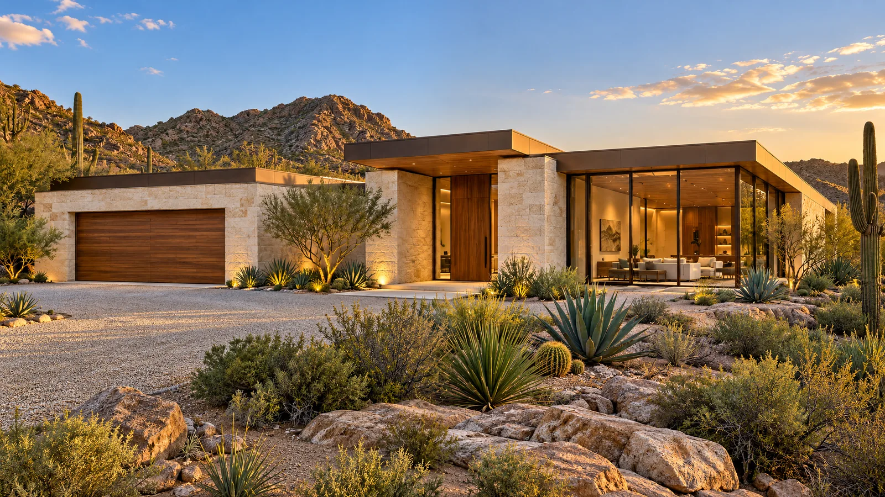
Private offering · 2026
Casa Ocotillo
The residence
Three limestone wings wrap a long, still pool. From the street the house gives away almost nothing; inside, every room opens to the water and the mountains beyond.
- Bedrooms
- 4
- Baths
- 4.5
- Sq ft interior
- 4,600
- Level
- 1
- Garage
- 2-car
- Acres
- 2.1
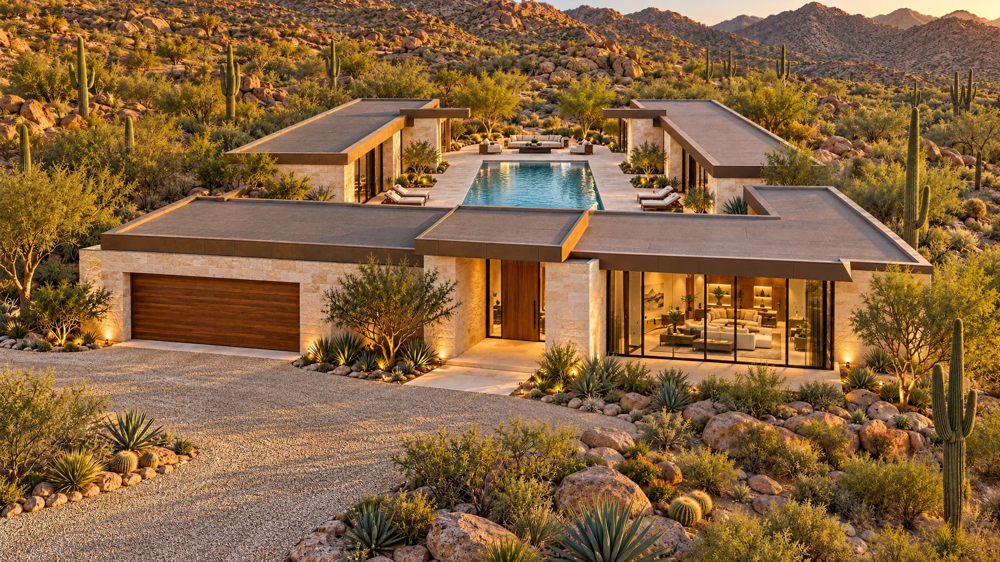
The approach
01 / 03
Arrival
A crushed-granite drive winds through saguaro and palo verde to a quiet arrival court.
02 / 03
The street front
Limestone walls, a bronze fascia and very few windows: the house keeps its view for the courtyard.
03 / 03
The threshold
A ten-foot walnut pivot door under a deep portal. Beyond it, light from the courtyard pulls you through.
Limestone, bronze and walnut.
A short palette, held to tight joints and deep shadows, so the light does the work. Move across the picture to look closer.
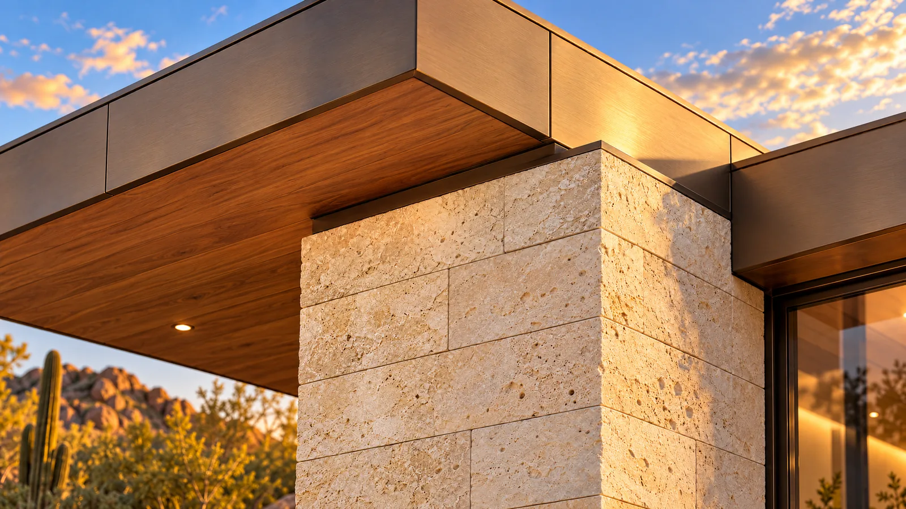
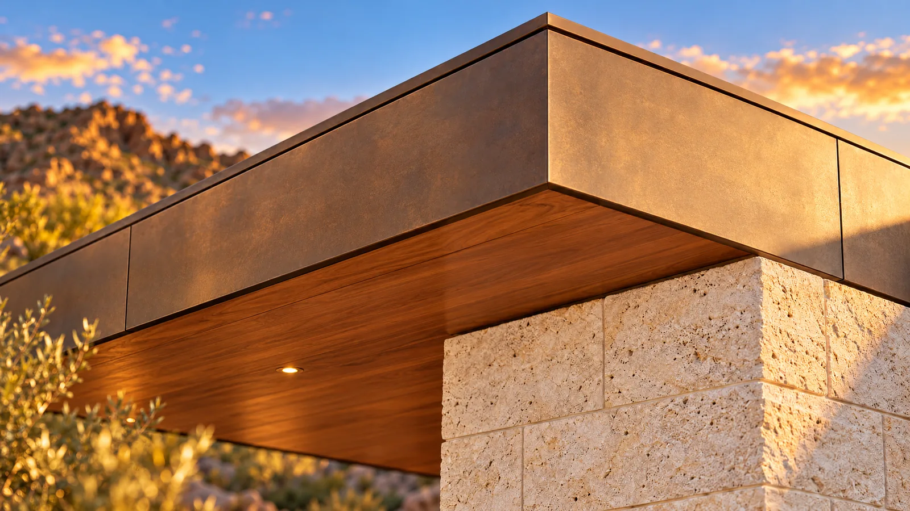
Inside
Rooms that open to the water.
Living room, kitchen and the primary bath each open onto the courtyard or a walled desert garden.
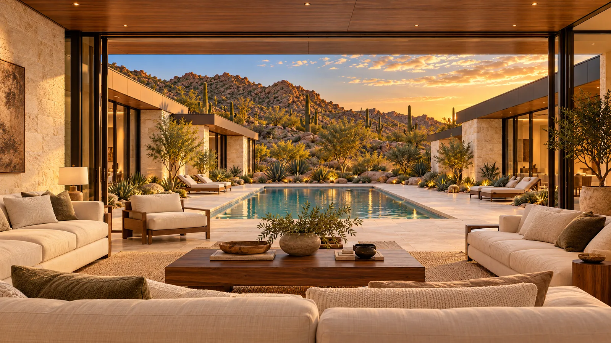
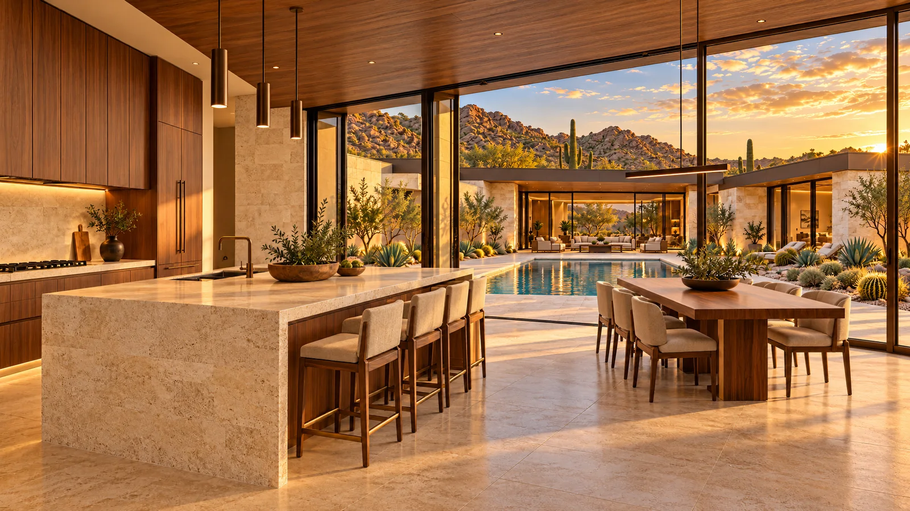
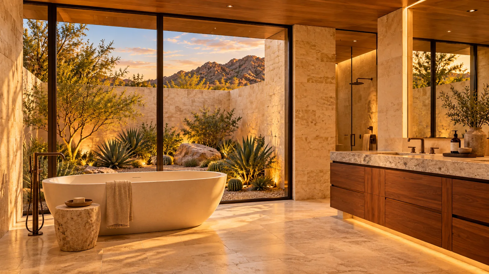
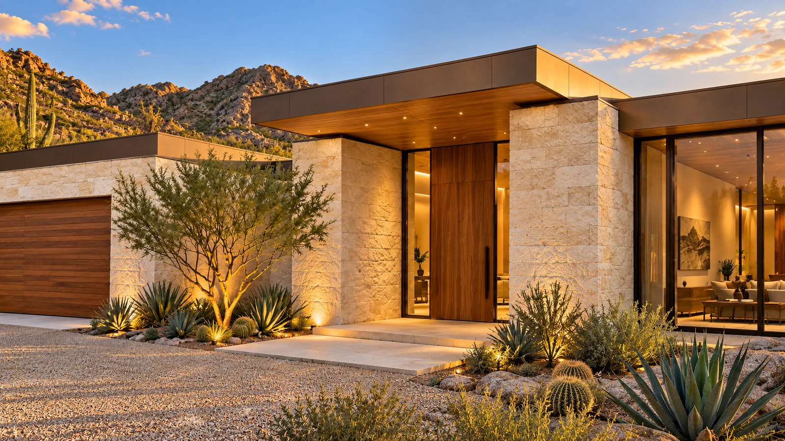
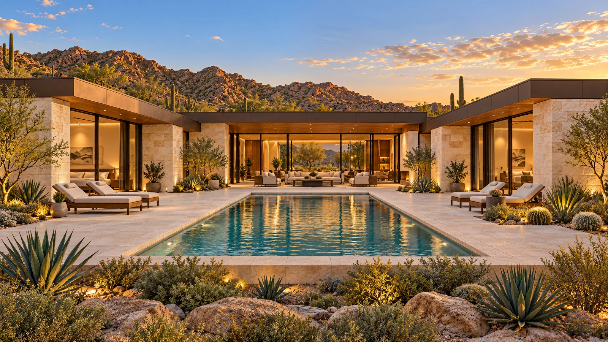
The courtyard
A long, still pool between the wings, with every room opening onto it through walls of glass.
The site.
Two acres of open desert. The wings close around the courtyard and leave the mountains framed at its far end.
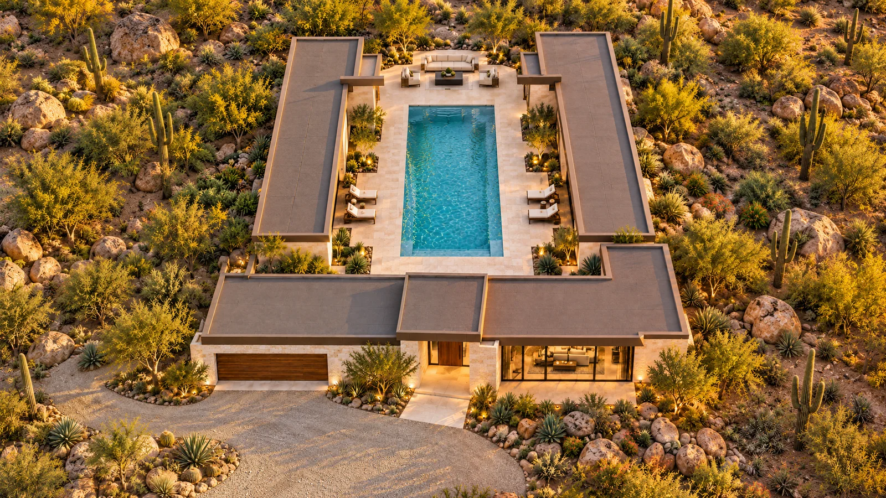
01Pool courtyard02Fire lounge03Primary wing04Guest wing05Living pavilion06Entry portal07Garage08Arrival courtGallery.
Every view, full size. Tap any picture to open it.
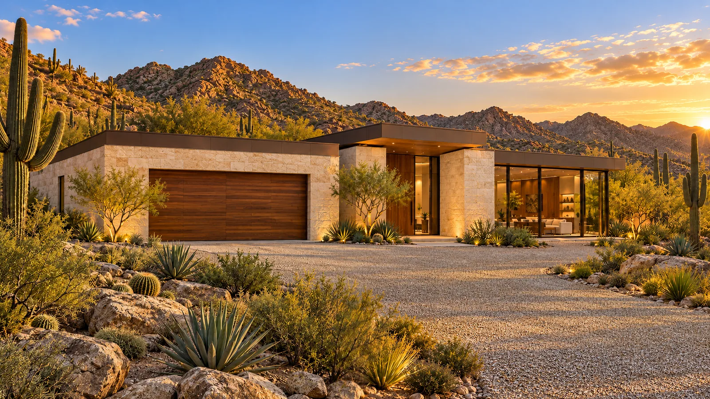
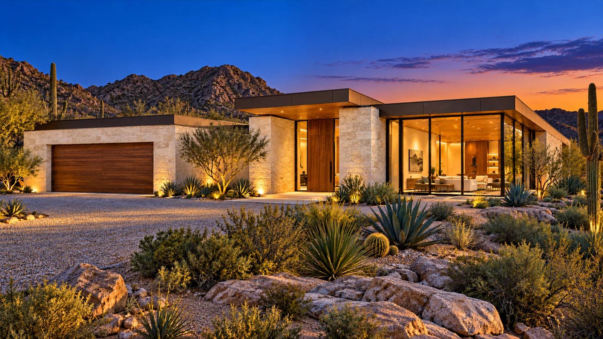
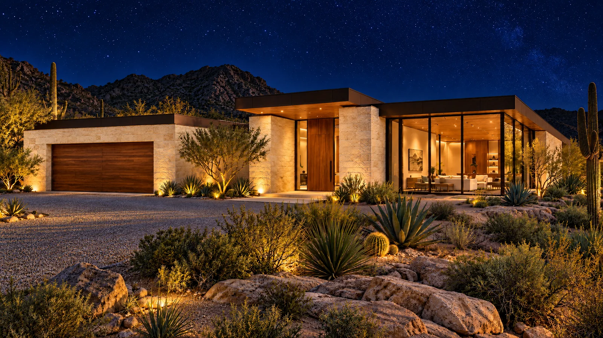
Private showings by appointment